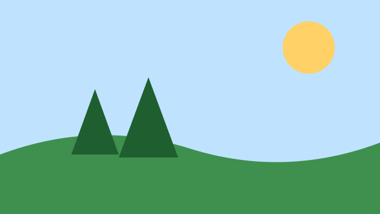

Tiede
Koululaiset löysivät pihalta uuden kovakuoriaislajin
Viidesluokkalaiset tutkivat koulun pihaa suurennuslasien kanssa ja huomasivat kuoriaisen, jota kukaan ei ollut aiemmin kuvannut Suomessa.

Viidesluokkalaiset tutkivat koulun pihaa suurennuslasien kanssa ja huomasivat kuoriaisen, jota kukaan ei ollut aiemmin kuvannut Suomessa.
